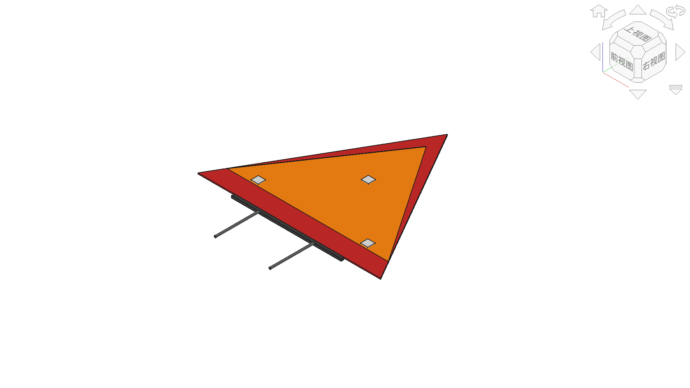
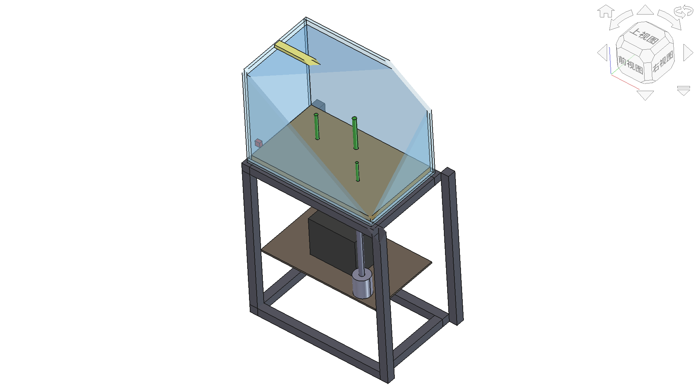

本页面收录两个基于普通高中技术与工程课程标准（2017年版2025年修订）附录2的项目式教学案例。两个案例分别采用螺旋式上升策略和大概念贯通式设计，通过真实项目载体实现核心素养的系统性培养。
FreeCAD融入原则：仅在涉及结构受力分析、装配流程可视化、系统空间关系、控制回路布局时自然融入，不强行植入。
AI应用原则：AI作为数据分析助手、方案对比工具、参数优化顾问，学生始终掌握决策权。
6模块21课时体系：全部材料严格遵循6模块21课时课程结构，无7模块残留。
项目式教学 FreeCAD FEM分析 AI数据分析
| 项目 | 内容 |
|---|---|
| 课时 | 5课时 |
| 课程模块 | 必修模块1：技术与工程设计1 |
| 核心素养 | 技术意识、物化能力、工程思维 |
| 项目载体 | 机动车三角警告牌 |
| 教学策略 | 螺旋式上升（认识标准→理解标准→应用标准→超越标准） |
| 来源 | 课程标准附录2 案例1 |
| 课时 | 课题 | 螺旋阶段 | 原创工具 | FreeCAD | AI |
|---|---|---|---|---|---|
| 1 | 情境导入与标准认知 | 认识标准 | 标准透视镜 | — | 标准信息检索 |
| 2 | 国标研读与参数提取 | 理解标准 | 标准解剖刀 | — | 参数逻辑校验 |
| 3 | 尺寸检测试验 | 应用标准(上) | 精度量尺台 | 模型尺寸对照 | 数据异常检测 |
| 4 | 视辨性与抗风稳定性测试 | 应用标准(下) | 风洞视辨台 | FEM抗风分析 | 视辨数据可视化 |
| 5 | 数据研判与方案优化 | 超越标准 | 优化决策树 | 方案FEM对比 | 跨国标合规检查 |

10个部件：红色反光边框、荧光橙色面板、底座、左右支撑腿、3个反光条
FEM分析：20-80km/h风速下安全系数4.23-67.71
大概念贯通 FreeCAD结构分析 AI系统优化
| 项目 | 内容 |
|---|---|
| 课时 | 16-20课时（4个单元） |
| 课程模块 | 必修模块2：技术与工程设计2 |
| 核心概念 | 结构、流程、系统、控制 |
| 项目载体 | 生态鱼缸的设计与制作 |
| 教学策略 | 大概念贯通式项目设计（结构→流程→系统→控制） |
| 来源 | 课程标准附录2 案例2 |
| 单元 | 课题 | 核心概念 | 课时 | 原创工具 | FreeCAD | AI |
|---|---|---|---|---|---|---|
| 一 | 缸体与支架结构设计 | 结构 | 4 | 结构受力分析卡 | 缸体受力分析 | 选材方案对比 |
| 二 | 造景流程设计 | 流程 | 4 | 流程时序优化器 | 装配时序可视化 | 时序依赖分析 |
| 三 | 生态循环系统设计 | 系统 | 4 | 系统关联图谱 | 子系统空间关系 | 生态平衡预测 |
| 四 | 智能温控系统设计 | 控制 | 4-8 | 闭环控制设计画布 | 传感器布局分析 | 控制参数优化 |

29个部件：缸体5块玻璃、铝型材支架(4立柱+8梁)、过滤箱、水泵、输水管、底砂、水草、LED灯、温度传感器
尺寸：缸体400×250×300mm，支架420×270×500mm
两个案例均采用过程性评价+作品评价相结合的多元评价方式：
| 评价维度 | 评价内容 | 权重 |
|---|---|---|
| 作品评价 | 功能实现、外观工艺、创新性 | 50% |
| 过程评价 | 设计文档、试验记录、团队协作 | 50% |
| 等级 | 标准描述 |
|---|---|
| 优秀 | 作品完整，功能达标，有创新设计，团队协作良好 |
| 良好 | 三个及以上单元作品完整，功能基本达标 |
| 合格 | 两个及以上单元作品完成，能体现核心概念应用 |
| 待改进 | 作品不完整或功能未达标，需重新提交 |
合计：15个文件（2个FCStd + 2个STEP + 2个PNG + 9个HTML教案）